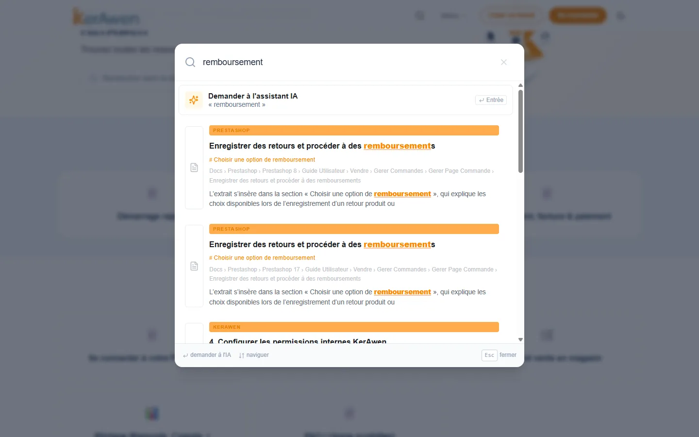
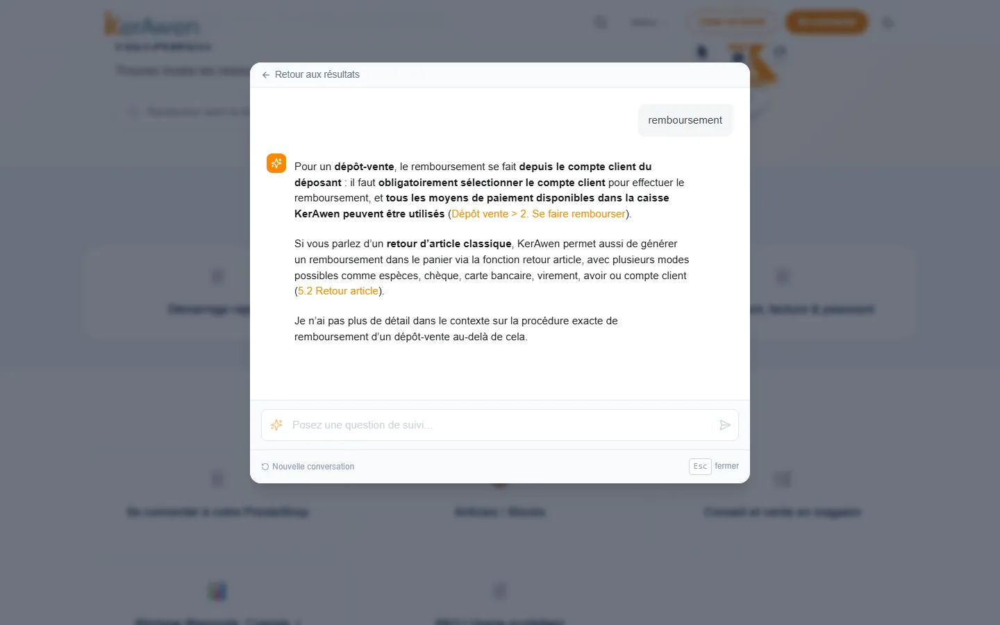

End-to-end AI & RAG systemLive
Documentation system & AI assistant — KerAwen
For KerAwen, I designed and deployed the entire support documentation system. Content written in Notion is automatically synced to a public documentation portal. Keyword search surfaces the right information instantly. An AI assistant (RAG), backed by a vector database, answers questions directly while citing its sources — and honestly says when it doesn't know. All this for a publisher of point-of-sale software for PrestaShop retailers (physical stores + e-commerce).
PythonRAGLLM (OpenAI)QdrantTypesenseDocusaurusDockerVPS
Try it live — support.kerawen.com
Result
The whole system is in production, used daily by customers: instant keyword search and assistant answers with source citations, 24/7.

